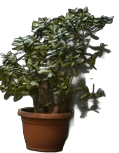
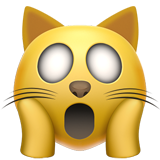

¿Cómo funciona?
Acá los detalles de la propuesta

🔹 Las tres respuestas más graciosas del formulario serán seleccionadas por nuestro equipo.
🔹 Se hará una votación en Instagram para seleccionar al ganador.
🔹 Se enviará la información necesaria a la persona seleccionada por mail.

¿Cuál es el plan?

Conocé personalmente a Ca7riel y Paco Amoroso y a Matías Bottero.
Participá de una parte de la entrevista y decile lo que quieras a tus artistas favoritos.

Quedate en el detrás de escena y observá el backstage de Entre dos Suculentas.